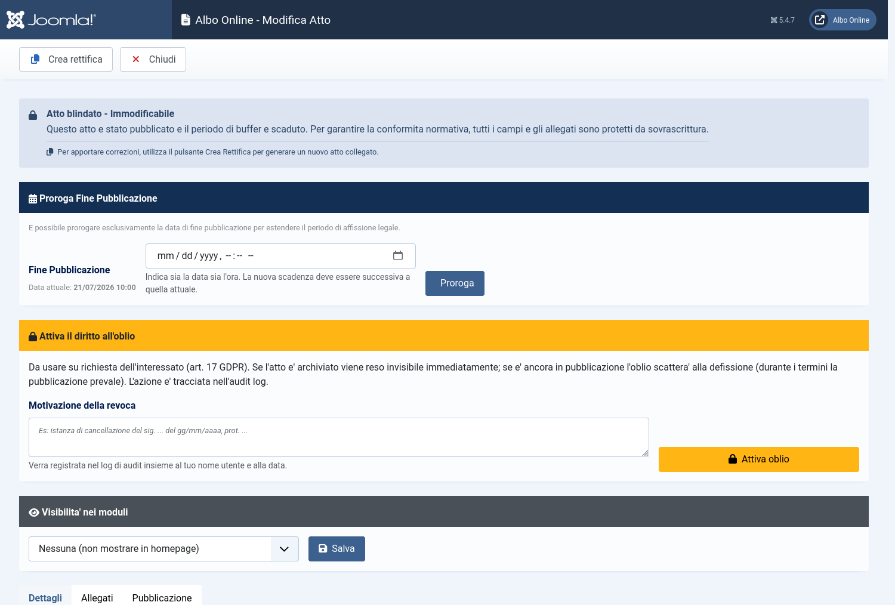
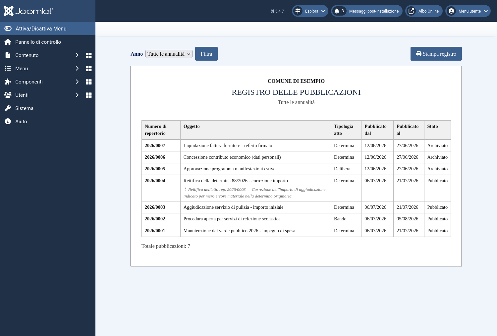
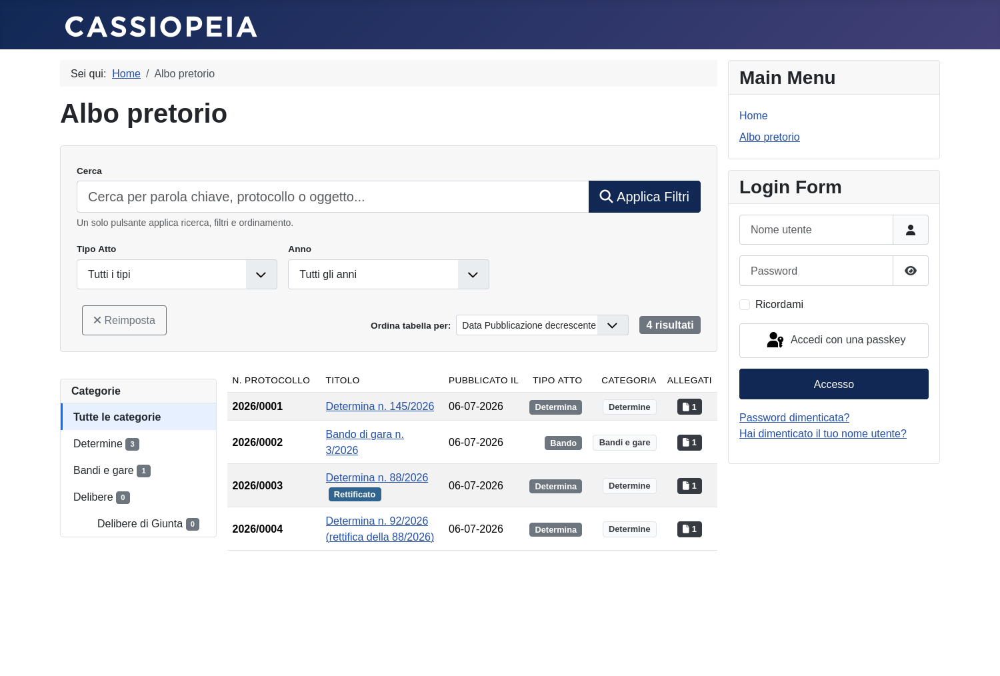
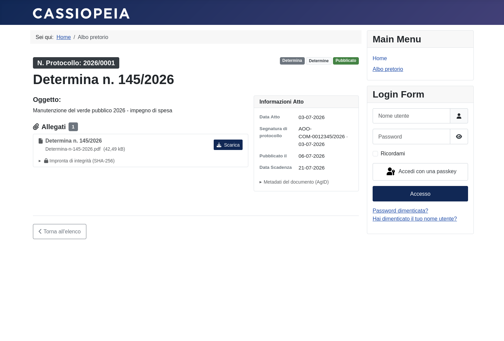
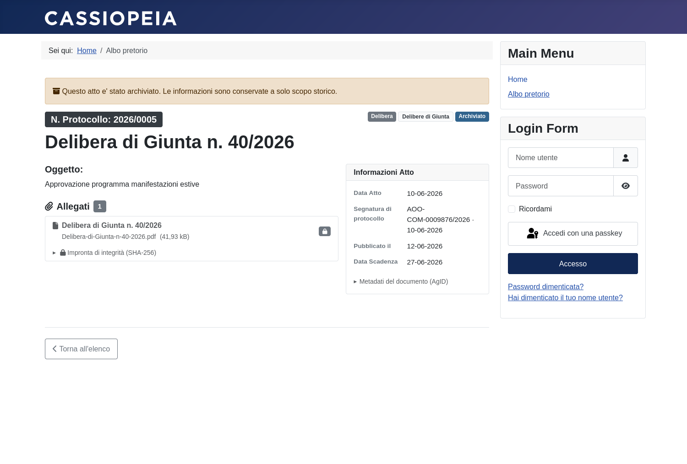
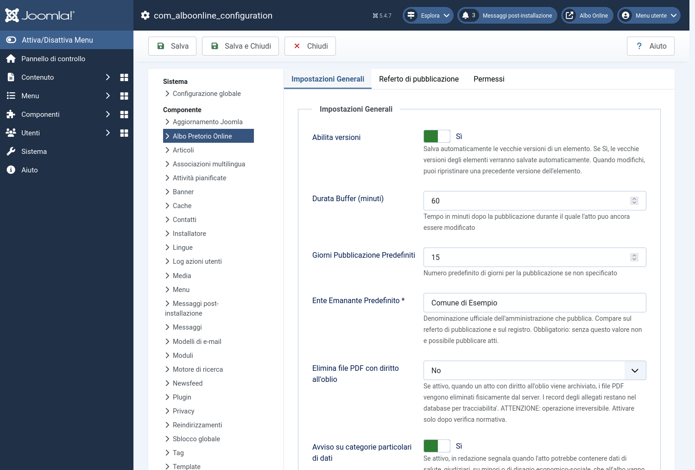
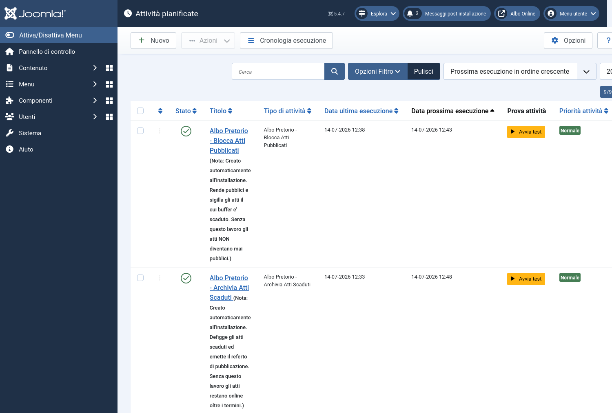

Il componente che trasforma Joomla nell'albo pretorio di un ente
pubblico: gestisce la vita di un atto — dalla bozza al ritiro — con le garanzie che la legge
richiede. Questa guida spiega, passo per passo, come si usa e perché funziona così.
Cos'è l'albo pretorio
L'albo pretorio è la bacheca ufficiale di un ente pubblico: il luogo dove gli
atti — determine, delibere, bandi, avvisi… — vengono affissi perché chiunque possa
prenderne visione. Non è una formalità. Dalla pubblicazione all'albo decorrono i termini di
legge: per esempio quelli entro cui un cittadino può impugnare un provvedimento, o quelli
oltre i quali un atto diventa efficace.
Proprio perché ha effetti giuridici, l'albo segue regole rigide. Un atto vi resta
affisso per un periodo stabilito dalla legge — diverso secondo il tipo di atto — e
poi deve essere ritirato. Finché è pubblicato deve avere una data certa,
non deve poter essere modificato, e deve portare con sé il proprio
documento. Se una di queste condizioni salta, la pubblicazione non prova più nulla —
o, peggio, diventa una violazione.
Cosa fa questo componente
Pubblicare all'albo non è «mettere un PDF su una pagina web». Sembra semplice, ma
è pieno di trappole che si pagano care:
Se…
…cosa succede
un atto non viene ritirato alla scadenza
l'ente viola la normativa sulla privacy: il Garante ha già sanzionato amministrazioni per la permanenza indebita di atti online.
le date non sono certe
i termini di impugnazione del cittadino diventano contestabili.
un atto pubblicato viene modificato
l'attestazione di pubblicazione non vale più nulla.
il documento non c'è
la pubblicazione è vuota, giuridicamente inesistente.
Questo componente non si limita a mostrare gli atti: impedisce che queste cose
accadano. Assegna da sé il numero di protocollo e la data certa, sigilla
l'atto una volta pubblicato, lo ritira da solo alla scadenza, ed emette la
prova di quando e per quanto è stato all'albo. Molte delle «cose che non ti lascia
fare» che incontrerai in questa guida sono protezioni volute, non limiti: servono a
non farti sbagliare su un atto che ha valore legale.
Chi mette in moto il ciclo
Tre ruoli, e uno solo agisce a mano — il tuo:
Ruolo
Cosa fa
🧑💼 Il responsabile
Il funzionario dell'ente. Redige, pubblica, proroga, rettifica, gestisce l'oblio, carica il referto firmato: sono le azioni manuali, quelle che imparerai in questa guida.
⚙️ Lo scheduler
Un'automazione periodica. Alla fine della finestra di sicurezza sigilla l'atto; alla scadenza lo ritira, lo archivia ed emette il referto. Azioni automatiche (vanno però attivate: vedi I lavori automatici).
👤 Il cittadino
Consulta l'albo, scarica gli atti, ne verifica l'integrità con l'impronta. Non modifica nulla.
Il ciclo di vita di un atto
Cinque passaggi. Tu ne fai due — preparare e pubblicare; gli altri tre li fa il
sistema, da solo. Ogni passaggio ha la sua pagina in questa guida.
#
Cosa succede
Chi lo fa
1
L'atto viene preparato in bozza, con i suoi allegati
Tu
2
Si preme Pubblica: protocollo, data certa, termini avviati → In Attesa
Tu
3
Passata l'ora di ripensamento, l'atto diventa pubblico e sigillato
Il sistema
4
Alla scadenza l'atto viene ritirato dall'albo
Il sistema
5
Viene emesso il referto: la prova di quando e per quanto si è pubblicato
Un albo pretorio non è un elenco di pagine web: è un procedimento con delle
scadenze, e quelle scadenze hanno effetti giuridici.
Da quando un atto è pubblicato decorrono i termini per impugnarlo; se resta
online oltre il dovuto, l'ente tratta dati personali senza più averne titolo.
Per questo il componente non si comporta come un normale gestore di contenuti.
Due regole spiegano quasi tutto il resto.
1. Un atto pubblicato non si modifica e non si cancella. Mai.
Non è un limite del software: è il motivo per cui l'albo ha valore legale. Se un atto
pubblicato si potesse ritoccare, non proverebbe più niente.
Un esempio. Un cittadino contesta una gara: sostiene che il bando all'albo
dicesse un'altra cosa. Se l'ente avesse potuto ritoccare il PDF dopo la pubblicazione, la
sua parola varrebbe quanto quella del cittadino — e l'albo non proverebbe nulla. Invece, al momento
della blindatura ogni allegato riceve un'impronta digitale (SHA-256), che il
sistema conserva e mostra: chiunque può verificare che il documento è identico byte per
byte a quello pubblicato quel giorno. È questa impossibilità di ritocco a dare valore alla
pubblicazione.
E in pratica. Se provi a modificare o salvare un atto blindato, il sistema
rifiuta: «Impossibile salvare: l'atto è blindato e immodificabile.»
Oggetto, date e allegati sono protetti da sovrascrittura. Restano possibili solo le
azioni dedicate — proroga, rettifica, diritto all'oblio — ciascuna con le sue
regole.
Per correggere si usa la rettifica: un atto nuovo, collegato al
vecchio, che spiega cosa si corregge.
2. Pubblicare non è istantaneo: c'è una finestra di sicurezza, poi ci pensa il sistema.
Premere «Pubblica» non mette subito l'atto all'albo. Il sistema assegna il
protocollo e fissa la data certa, poi mette l'atto
«In Attesa» — non ancora visibile al cittadino — e ti lascia una finestra
(di norma un'ora) per annullare, se ti accorgi di un errore.
Solo dopo, in automatico, l'atto viene reso pubblico e sigillato;
alla scadenza viene ritirato e ne viene emesso il referto, senza che nessuno debba
ricordarsene.
Attenzione: questo passaggio automatico avviene solo se i due
lavori pianificati girano. Se non sono attivi, l'atto resta «In Attesa» per
sempre: crederesti di aver pubblicato senza averlo fatto.
Per cominciare
I cinque stati di un atto
Nell'elenco degli atti, la colonna «Stato Workflow» dice sempre a che punto è
l'atto.
L'elenco degli atti. Nella colonna «Stato Workflow» si leggono, ognuno col suo colore, quattro dei cinque stati: Archiviato, Pubblicato, In Attesa e Bozza.
E il «Cestinato»? Va cercato con il filtro
Nella schermata qui sopra il Cestinato non compare: di default l'elenco mostra
tutti gli atti tranne quelli nel cestino. Per vederli premi
«Opzioni Filtro» e scegli «Cestinato» nel menu
«Stato Workflow». Ricorda: nel cestino può finire solo una bozza
— un atto pubblicato non si cestina.
Stato
Cosa significa
Il cittadino lo vede?
Si può modificare?
Bozza
Lo stai preparando
No
Sì, tutto
In Attesa
Hai premuto «Pubblica»: protocollo assegnato, termini avviati — ma sei ancora in tempo per annullare
Non ancora
Sì (o annulla)
Pubblicato
È blindato: online, sigillato, immodificabile
Sì
No
Archiviato
Il periodo è finito: ritirato dall'albo, resta nello storico
Sì, nell'archivio
No
Cestinato
Buttato via — solo se era ancora una bozza
No
—
Pubblicare · passo 1
Preparare la bozza
Componenti → Albo Pretorio Online → Atti → Nuovo
La scheda di un atto in bozza con l'aiuto in linea acceso: sotto ogni campo compare la spiegazione (qui Oggetto, Categoria, Tipo Atto).
💡 Il pulsante «Scegli aiuto in linea», in alto a destra nella barra,
accende le spiegazioni sotto ogni campo — come nella foto qui sopra. Sono nascoste di
default per non fare rumore: accendile la prima volta.
I campi dove sbagliare ha una conseguenza
Campo
Perché conta
Oggetto
È pubblico: è quello che il cittadino legge nell'elenco. Ed è il testo su cui il sistema cerca eventuali dati sensibili per avvisarti.
Tipo Atto
Decide la durata della pubblicazione. Non è un'etichetta: una determina resta 15 giorni, un bando 30. La durata è un minimo di legge.
Categoria
Serve solo a classificare. Non limita chi vede l'atto — vedi Le categorie.
Ente Emanante
Obbligatorio. Viene stampato sul referto: è il nome che l'ente esibisce se qualcuno contesta. Arriva già compilato dalle Opzioni.
Responsabile del Procedimento
Anche questo finisce sul referto e nel registro.
Data Atto
È la data del provvedimento (quella scritta sull'atto), non quella di pubblicazione. Sono due cose diverse.
Segnatura di protocollo
Il numero del protocollo informatico dell'ente: è un'altra cosa rispetto al numero di repertorio dell'albo, che assegna il sistema. Facoltativo.
Pubblicare · passo 2
Allegati e firme
Scheda Allegati → Aggiungi allegati. Formati
accettati: PDF e P7M, massimo 20 MB per file.
Sotto ogni file caricato il sistema dice cosa ha visto. Sono avvisi, non
blocchi.
Cosa scrive il sistema sotto ogni allegato: firma integra col firmatario,
firma non valida quando il file è alterato, l'avviso «non PDF/A» e il
riconoscimento del PDF/A. Sono esempi di prova, senza valore giuridico.
Le firme: due modi, e cosa il sistema controlla
Un documento firmato digitalmente può arrivare in due forme. Non devi
sceglierle né dichiararle: carichi il file com'è e il sistema riconosce da solo il
tipo.
Tipo di firma
Com'è fatto il file
PAdES
La firma è dentro il PDF: il file resta un .pdf (che si apre e si legge normalmente, ma porta la firma dentro).
CAdES
La firma è una «busta» che avvolge il documento: il file è un .p7m (dentro c'è il documento + la firma).
Cosa verifica il sistema
Sotto ogni file firmato compare l'esito. Il sistema controlla tre cose:
che il documento non sia stato alterato dopo la firma → scrive
«Firma tecnicamente integra» (in verde), oppure
«Firma non valida: il documento risulta alterato» (in rosso) se anche
un solo byte è cambiato;
chi ha firmato — nome e codice fiscale, alla voce «Firmatario»;
la presenza di una marca temporale (solo la presenza, non la sua validità).
Se un file non è firmato, semplicemente non compare nessun esito di firma.
«Integra» non vuol dire «qualificata a norma»
Il sistema verifica l'integrità tecnica, non che la firma sia
qualificata e valida a norma — cioè la catena di certificazione, la revoca del
certificato, la lista di fiducia europea. E lo dichiara apertamente sotto ogni
firma: «Validazione avanzata … non disponibile: esito non equivalente a
"firma qualificata valida a norma"». Per quella verifica serve un validatore
esterno (il servizio della Commissione europea, o strumenti come Dike / ArubaSign).
Preferiamo dirlo che fingere.
Il formato del PDF
Oltre alla firma, il sistema guarda com'è fatto il PDF:
se non è in PDF/A lo segnala — è il formato consigliato per la
conservazione a lungo termine, ma non è obbligatorio;
se sembra una scansione senza testo, avvisa: un documento così è
illeggibile per un non vedente (serve un PDF con testo, o un'alternativa).
Senza allegato non si pubblica
Pubblicare all'albo è pubblicare un documento. Senza, i termini di legge
decorrerebbero su un atto vuoto.
(Se l'ente pubblica avvisi di solo testo, l'obbligo si può disattivare nelle Opzioni — ma
è una scelta da fare consapevolmente.)
Pubblicare · passo 3
Avvisi e checklist
Due aiuti prima di premere «Pubblica». Nessuno dei due blocca: servono a
farti fermare un attimo.
I due aiuti in cima alla scheda dell'atto in bozza: l'avviso sui dati particolari
(giallo) e la checklist «Prima di pubblicare, verifica:», qui aperta sui suoi cinque controlli.
Dati particolari
Se nel testo compaiono termini che fanno pensare a dati di salute, giudiziari,
minori o disagio economico, appare un riquadro giallo: «Possibili dati particolari
da verificare».
Il rilevamento è automatico e approssimato: può sbagliare in eccesso o in
difetto, e la valutazione resta tua. Ma quando appare, fermati.
L'omissis va fatto prima di caricare il PDF. Il sistema non oscura i
documenti — e nessun software serio lo fa in automatico: il testo resterebbe estraibile sotto
il nero, dando una falsa sicurezza.
Pubblicarli senza oscurarli è un trattamento
illecito, e il Garante ha già sanzionato comuni. Le norme
dietro questa regola ↗
La checklist
Sugli atti in bozza c'è un blocco richiudibile «Prima di pubblicare, verifica:» con
cinque controlli: minimizzazione dei dati, omissis, versione corretta dell'allegato, ente e
segnatura, durata adeguata.
Le spunte non vengono salvate: sono un promemoria per te, non un alibi. La
responsabilità resta del responsabile.
Pubblicare · passo 4
Pubblicare
Con l'atto in Bozza, premi «Pubblica (assegna protocollo)»
nella barra in alto. Oppure, dall'elenco, clicca il badge Bozza.
Prima di lasciarti pubblicare, il sistema controlla cinque cose
Se una manca, rifiuta e ti dice esattamente cosa:
Se…
Il messaggio
non hai il permesso
«Non hai i permessi per pubblicare gli atti.»
manca l'ente emanante
«Impossibile pubblicare: manca l'ente emanante…»
non c'è nessun allegato
«…senza, i termini decorrerebbero su un atto vuoto.»
un allegato è registrato ma il file non c'è
«Ricarica il documento prima di pubblicare.»
hai messo una data di fine troppo vicina
«…per questa tipologia la durata minima di legge è di N giorni.»
Cosa succede quando pubblichi
Ti viene assegnato il numero di repertorio (es. 2026/0001, progressivo per anno). Nell'elenco atti e sul sito compare nella colonna «Protocollo» — è lo stesso numero: non confonderlo con la segnatura del protocollo informatico dell'ente, che è un campo a parte.
L'atto passa a In Attesa.
Parte la data certa di inizio pubblicazione: da qui decorrono i termini.
Viene calcolata la data di fine, in base al tipo di atto.
Sulla durata
Puoi pubblicare più a lungo del minimo (per una graduatoria anche un
anno), mai per meno. Se lasci il campo vuoto, il sistema calcola da solo.
Pubblicare · passo 5
L'ora per ripensarci
Appena pubblichi, l'atto non è ancora visibile al cittadino. C'è una finestra —
di norma un'ora — in cui puoi tornare indietro.
In questa finestra…
✅ puoi ancora modificare l'atto
✅ puoi annullare la pubblicazione
❌ il cittadino non vede niente
Se annulli: l'atto torna in Bozza e le date si azzerano — ma il
numero di protocollo resta suo. Non viene bruciato e non si crea un buco nel
repertorio: quando ripubblicherai, riavrà lo stesso numero.
Se non fai niente: allo scadere dell'ora il sistema, da solo, rende l'atto
pubblico e lo sigilla (calcola l'impronta digitale di ogni
allegato).
Se un atto resta «In Attesa» per ore, non è un ritardo: è un guasto
Significa che i lavori automatici non stanno girando, e nessun atto sta diventando
pubblico. Vai a Problemi e soluzioni.
Pubblicare · passo 6
L'atto è blindato
I campi diventano grigi, il pulsante Salva sparisce, gli allegati non si
toccano più. Non è un malfunzionamento: è il punto di tutto il sistema.

Un atto blindato. In cima compare «Atto blindato - Immodificabile».
Da adesso quell'atto prova qualcosa, e una prova che si può ritoccare
non prova niente.
Tutte e quattro finiscono nel registro delle operazioni, con il tuo nome e
la data.
Dopo la pubblicazione
Prorogare la pubblicazione
Sull'atto blindato, riquadro «Proroga Fine Pubblicazione». Indica data e ora,
e premi «Proroga».
Il riquadro «Proroga Fine Pubblicazione»: la data attuale, il campo per la
nuova scadenza e il pulsante «Proroga». È l'unico modo per allungare la pubblicazione.
Si può solo allungare, mai accorciare
Non è una svista: accorciare la pubblicazione taglierebbe i termini di
impugnazione del cittadino, cioè gli toglierebbe tempo per difendersi. Il sistema non
lo consente a nessuno.
Il campo «Fine Pubblicazione» nella scheda è di sola lettura: scriverci
dentro non proroga niente. L'unica via è il riquadro.
Dopo la pubblicazione
Correggere un atto pubblicato: la rettifica
Hai pubblicato e c'è un errore. Non si corregge: si rettifica.
Premi «Crea rettifica». Il sistema crea un atto nuovo, in
bozza, che:
ricopia anche gli allegati (li sostituirai con quelli corretti)
resta collegato all'atto originale
Poi lo pubblichi come un atto qualunque. Avrà un suo numero di protocollo.
La motivazione è obbligatoria
Nella scheda Rettifica, il campo Note Rettifica va
compilato. Senza, il salvataggio viene rifiutato:
«Indica la motivazione della rettifica: un atto che ne rettifica un altro deve
essere motivato (art. 3 L. 241/1990).»
Quella motivazione viene congelata nel referto e mostrata nel registro. È il
senso della rettifica: non nascondere l'errore, ma spiegarlo.
Una cosa sui tempi
L'atto originale viene marcato come «rettificato» solo quando la rettifica viene
pubblicata, non quando la crei. Se abbandoni la bozza della rettifica, l'originale
resta intatto.
Dopo la pubblicazione
La scadenza: defissione e referto
Alla data di fine il sistema fa tutto da solo: archivia l'atto, lo toglie
dall'albo, ed emette il referto.
Il referto
È il documento che l'ente esibisce se qualcuno contesta quando e per quanto un atto
è stato pubblicato. Un PDF congelato, con:
il periodo effettivo di pubblicazione (quello vero, non quello previsto)
ente, responsabile, repertorio, segnatura, e — se c'è — la motivazione della rettifica
un'impronta digitale (SHA-256): se qualcuno alterasse il file, l'impronta non tornerebbe
Un referto di esempio (dati fittizi). Nella tabella il repertorio, l'oggetto, il
periodo effettivo di pubblicazione e il responsabile; in fondo lo
spazio per la firma (il referto nasce senza firma).
Scarica il PDF di esempio ↓
Come si firma il referto
Il referto nasce senza firma: in fondo trovi lo spazio per firmarlo. Chi firma è
il responsabile della pubblicazione — cioè chi ha premuto «Pubblica» (messo, segretario,
addetto all'albo, secondo il regolamento del vostro ente), non chi
richiede o redige l'atto. Hai due strade:
Come
Cosa fai, e cosa fa il sistema
Firma digitale
Scarichi il PDF, lo firmi in PAdES (.pdf) o CAdES
(.p7m) e lo ricarichi (max 20 MB). Il sistema verifica la
firma e controlla che sia stata apposta proprio su quel referto, non su
un altro documento (confronto dell'impronta).
Firma a penna
Stampi il referto, firmi lo spazio in fondo, lo scansioni e
ricarichi il PDF. Resta agli atti come copia firmata.
La scansione non ha una firma verificabile
Se ricarichi una scansione, il referto risulta «Firmato» e la copia è
conservata, ma non c'è una firma digitale da controllare: vale come copia della firma
autografa, non come prova crittografica. Per la verifica automatica serve una firma
digitale (PAdES o CAdES).
In entrambi i casi il referto emesso resta identico, byte per byte: la versione
firmata si aggiunge, non lo sostituisce.
Il referto non è imposto da una legge nazionale: la sua disciplina dipende
dal regolamento del vostro ente. Per questo si può disattivare e la
denominazione si può cambiare. Il cittadino non lo vede: è un documento
interno, agli atti.
Dopo la pubblicazione
Il registro delle pubblicazioni
Dall'elenco degli atti, pulsante «Registro pubblicazioni» nella
barra in alto. È il riepilogo di tutto ciò che l'ente ha pubblicato, per annualità.

Il registro delle pubblicazioni, filtrabile per anno e stampabile.
Per ogni atto pubblicato riporta: numero di repertorio, oggetto, tipologia,
periodo di pubblicazione (dal — al) e stato. Se un atto è una
rettifica, sotto l'oggetto compare il riferimento all'atto rettificato
con la motivazione.
Si può filtrare per anno (o vedere tutte le annualità insieme) e
stampare con il pulsante «Stampa registro» — utile per la vidimazione periodica,
se il regolamento dell'ente la prevede.
Registro e referto non sono la stessa cosa
Il registro è l'elenco riepilogativo di tutte le pubblicazioni.
Il referto è l'attestazione del singolo
atto, emessa alla defissione. Il primo si consulta, il secondo si esibisce.
Dopo la pubblicazione
Riattivare un atto archiviato
Un atto archiviato torna online prorogandolo: apri l'atto e, nel
riquadro «Proroga Fine Pubblicazione», indica una data futura. Il pulsante
diventa «Riattiva e Proroga».
Su un atto archiviato il riquadro cambia: avvisa che l'atto tornerà online e il pulsante diventa «Riattiva e Proroga».
La data che indichi è la nuova fine della pubblicazione. L'atto torna
online subito, direttamente come «Pubblicato»: la riattivazione non ripassa
dallo stato «In Attesa», non c'è una nuova finestra per ripensarci.
Il sistema apre un nuovo periodo di pubblicazione — che parte adesso — e
non allunga quello vecchio. È importante: se allungasse il vecchio, il referto
attesterebbe una pubblicazione continua che comprende i giorni in cui l'atto era invisibile
— cioè attesterebbe il falso. Così invece avrai due referti, uno per
periodo, entrambi veri.
Due casi in cui viene rifiutata
Caso
Perché
C'è il diritto all'oblio attivo
«Ripubblicarlo sarebbe un trattamento illecito.» Prima va revocato l'oblio, motivando.
I documenti sono stati cancellati
«Un atto ripubblicato senza il proprio documento non ha valore.» Vale anche dopo aver revocato l'oblio: se i PDF non ci sono più, non tornano.
Dopo la pubblicazione
Il diritto all'oblio
Quando un cittadino chiede la cancellazione dei propri dati (art. 17 GDPR),
l'ente lo esegue sull'atto. La motivazione è sempre obbligatoria e resta tracciata.
Come si attiva
Si fa dall'atto stesso, e solo su un atto pubblicato o archiviato (su una
bozza non avrebbe senso: non è ancora pubblico). Apri l'atto: se hai il permesso, in alto compare
il riquadro «Attiva il diritto all'oblio». Scrivi la motivazione
— il riferimento all'istanza dell'interessato, almeno 15 caratteri — e premi
«Attiva oblio».
Il riquadro «Attiva il diritto all'oblio»: la motivazione è obbligatoria (il riferimento
all'istanza) e viene registrata nel log insieme al tuo nome e alla data.
Chi può farlo, e cosa resta scritto
Serve un permesso dedicato: non tutti i redattori possono attivare o revocare
l'oblio. E ogni attivazione — come ogni revoca — finisce nell'audit log con il tuo
nome utente, la data e la motivazione: è l'accountability che la norma richiede
(art. 5.2 GDPR).
Cosa succede dipende da dove si trova l'atto
Situazione
Effetto
L'atto è archiviato (termini finiti)
Sparisce subito dal sito: le sue pagine rispondono «non trovato».
L'atto è ancora nei termini
Resta online. L'oblio viene registrato e scatterà alla scadenza.
Perché un atto nei termini resta online?
Perché durante la pubblicità legale l'obbligo di legge prevale sul diritto
alla cancellazione (art. 17.3.b GDPR). Non è il software che decide: è la norma. Il sistema
registra la richiesta e la esegue appena può.
Le norme dietro questa regola ↗
Nessuna «lapide»
Quando un atto sparisce per oblio, non resta un cartello che dica «contenuto
rimosso». Non è una dimenticanza: un avviso del genere rivelerebbe proprio ciò che l'oblio
deve nascondere — cioè che su quell'atto qualcuno ha chiesto la cancellazione. Perciò la
pagina risponde «non trovato», come se l'atto non fosse mai esistito. L'atto
resta comunque nel pannello di amministrazione, a disposizione dell'ente — salvo
che l'ente non abbia scelto di cancellarne anche i documenti (vedi sotto).
Nascondere, o cancellare davvero?
Di norma l'oblio nasconde l'atto ma conserva i documenti: i
PDF restano sul server. Così, se l'oblio è stato un errore, si può tornare indietro.
L'ente può però scegliere la cancellazione vera: nelle Opzioni c'è
«Elimina file PDF con diritto all'oblio», di serie spenta. Se
attiva, quando un atto con oblio viene archiviato i suoi file PDF vengono
eliminati fisicamente dal server (i record degli allegati restano, con il nome del file
svuotato, per tracciabilità).
Con i PDF cancellati, l'oblio non si torna indietro
La cancellazione dei documenti è irreversibile. Puoi ancora revocare il
flag dell'oblio, ma l'atto non potrà più tornare online: senza i suoi
documenti non è riattivabile. Attiva questa opzione solo dopo una valutazione
normativa.
Revocare l'oblio
La revoca serve a correggere un errore: l'oblio è stato attivato per sbaglio,
o sull'atto sbagliato. Non è un ripensamento del cittadino. Sull'atto compare il riquadro rosso
«Diritto all'Oblio attivo»: scrivi la motivazione (almeno 15
caratteri) e premi «Revoca oblio». Serve lo stesso permesso
dell'attivazione, e anche la revoca finisce nel log — nome, data, motivazione.
Il riquadro «Diritto all'Oblio attivo»: spiega perché l'atto non è online e, a chi ne ha
il permesso, offre la revoca con motivazione obbligatoria.
La revoca da sola non rimette online l'atto
Revocare azzera solo il flag dell'oblio: non tocca la visibilità. Cosa succede
dipende da dov'era l'atto quando l'oblio è scattato.
Se l'oblio era scattato…
Dopo la revoca
su un atto archiviato (già reso invisibile)
L'atto resta invisibile. Per riportarlo online devi riattivarlo — e solo se i suoi PDF esistono ancora.
su un atto ancora nei termini (rimozione solo programmata)
La revoca annulla la rimozione programmata: l'atto prosegue normale e si archivia alla scadenza come sempre.
La revoca è permessa ma tracciata, non vietata: un divieto assoluto verrebbe
aggirato modificando il database a mano. Meglio un'operazione possibile e registrata,
di cui resta traccia — di nuovo l'accountability dell'art. 5.2 GDPR.
Organizzare
Le categorie
Le categorie sono le cartelle in cui classificare gli atti:
servono a tenerli in ordine e a farli trovare al cittadino. Ogni atto deve stare in una categoria.
A cosa servono
Le categorie hanno tre usi, e un solo scopo: mettere ordine. Non cambiano nulla
del valore legale dell'atto.
Classificano ogni atto. Quando prepari un atto, la categoria è un campo
obbligatorio: dice «di che tipo è» (Determine, Bandi e gare, Delibere…).
Guidano il cittadino. Nel sito pubblico le categorie compaiono come un
albero di navigazione a lato dell'elenco: il cittadino ci clicca sopra per
vedere solo gli atti di quella categoria. Accanto a ciascuna c'è il
numero di atti che vi troverà.
Si possono annidare. Una categoria può avere sotto-categorie
(per esempio «Delibere → Delibere di Giunta»). Cliccando la categoria madre il cittadino vede
anche gli atti delle sotto-categorie.
Quello che le categorie non fanno: non toccano il protocollo, le date, i termini
o il documento dell'atto. Sono una classificazione, non una parte dell'atto — per
questo, come vedremo, cambiare categoria è l'unica modifica ammessa su un atto già blindato.
Dove si gestiscono
Componenti → Albo Pretorio Online → Categorie. Da qui le crei, le rinomini, le riordini
e le annidi. Sono le categorie standard di Joomla, ma dedicate all'albo: non si
mescolano con quelle degli articoli del sito.
La gestione delle categorie dell'albo: qui le crei e le organizzi. Ogni atto ne
richiederà una.
Come si crea (o si modifica) una categoria
Dall'elenco delle categorie premi «Nuovo» — oppure apri una categoria
esistente per modificarla: la scheda è la stessa. Il pulsante «Scegli aiuto in linea»,
in alto a destra, accende le spiegazioni sotto ogni campo, come nella foto qui sotto.
La scheda di una categoria — qui «Delibere di Giunta», sotto-categoria di «Delibere» —
con l'aiuto in linea acceso: sotto ogni campo compare la spiegazione.
I campi che contano:
Campo
Cosa fa
Titolo(obbligatorio)
Il nome che il cittadino vedrà nell'albero delle categorie, sul sito pubblico.
Principale
La categoria madre. Lascialo in alto per una categoria principale; scegli una categoria esistente per creare una sotto-categoria — è così che «Delibere di Giunta» sta dentro «Delibere».
Descrizione
Facoltativa: un testo introduttivo per la categoria.
Stato
«Pubblicato» la rende visibile. Attenzione: sospenderla la nasconde dalla navigazione del sito, ma non ritira gli atti che contiene — restano pubblicati e i termini continuano a decorrere. Un atto si ritira solo alla scadenza o con l'oblio.
Accesso
Vedi il riquadro qui sotto: non limita chi vede gli atti.
Alias
Generato dal titolo; è la parte dell'URL. Puoi lasciarlo com'è.
Si salva con «Salva» (o «Salva e Chiudi»). Per rinominare una
categoria basta riaprirla e cambiare il titolo; per riordinarle si usa
l'ordinamento nell'elenco. Spostare un atto da una categoria all'altra si fa invece
dalla scheda dell'atto, cambiando il campo Categoria (finché l'atto non è
blindato).
L'errore che quasi tutti fanno: il campo «Accesso»
Nella scheda della categoria c'è il campo «Accesso» (il livello di accesso).
Sembra che serva a limitare chi vede gli atti di quella categoria.
Non è così.
Quel campo nasconde la categoria dall'albero di navigazione a chi non è
autorizzato — ma gli atti restano nell'elenco pubblico: la loro visibilità
dipende dal livello di accesso dell'atto, non da quello della categoria. Un atto
pubblicato all'albo è consultabile da chiunque, anche se sta in una categoria
«riservata». È giusto così — un albo pretorio è pubblico per definizione — ma è una
falsa sicurezza se qualcuno ci conta.
Se un contenuto non deve essere pubblico, non va pubblicato all'albo.
Il numero accanto a ogni categoria
Nell'albero, accanto a ogni categoria, c'è il conteggio degli atti. È coerente con ciò
che vedrai davvero: nella vista Albo conta i pubblicati, nella vista
Archivio gli archiviati. Gli atti in oblio non vengono mai contati,
così il numero non rivela l'esistenza di un atto rimosso.
Non si cancella una categoria che contiene atti
«Impossibile cancellare la categoria: contiene N atti dell'Albo Pretorio…
Sposta prima l'atto in un'altra categoria.»
Il sistema impedisce di cancellare una categoria che contiene atti: cancellarla
li lascerebbe orfani, senza classificazione. Prima vanno spostati in un'altra
categoria.
Se però un atto è già rimasto orfano (per esempio da un'installazione vecchia),
aprendolo trovi il riquadro «Categoria mancante»: è l'unica
modifica ammessa su un atto blindato, proprio perché la categoria non incide su protocollo, date,
termini o documento. L'operazione viene registrata.
Organizzare
Chi può fare cosa
Opzioni → Permessi. I permessi decidono cosa può fare un
funzionario in amministrazione. Il senso principale: chi redige e chi pubblica devono
poter essere persone diverse — è ciò che rende difendibile un albo davanti a un controllo.
I permessi NON decidono cosa vede il cittadino
L'albo è pubblico per definizione: un atto pubblicato è consultabile da
chiunque, senza login e a prescindere dai permessi. I permessi governano il
lavoro in amministrazione, non la vista pubblica — con una sola
eccezione sul sito: lo scarico degli allegati degli atti
archiviati (e delle bozze) è riservato a chi ne ha il permesso; il cittadino li
vede elencati ma col lucchetto. Vedi Cosa vede il cittadino.
I permessi che contano
Permesso
Cosa consente
Dove
Accesso Amministrativo
Entrare nella gestione dell'albo in amministrazione
Admin
Crea
Creare nuove bozze
Admin
Modifica
Modificare le bozze (e scaricare gli allegati di una bozza dal sito)
Admin + sito
Pubblicare Atti
Premere «Pubblica»: assegnare protocollo e data certa. È il permesso che separa il redattore dal responsabile.
Admin
Rettificare Atti
Creare la rettifica di un atto blindato
Admin
Revocare il Diritto all'Oblio
Attivare e revocare l'oblio, con motivazione tracciata
Admin
Scaricare Archiviati
Scaricare gli allegati degli atti archiviati e i referti — anche dal sito pubblico, dove il cittadino non può
Admin + sito
Un redattore tipico ha: Accesso Amministrativo, Crea, Modifica.
Non ha «Pubblicare Atti»: il pulsante non gli compare, e anche forzando la
richiesta il sistema la respinge.
Avere «Pubblicare Atti» non basta: la pubblicazione fallisce comunque se
manca l'ente emanante o l'allegato. I controlli valgono per tutti,
amministratore compreso.
«Modifica» ed «Elimina» non aggirano i presìdi
Anche con «Modifica», «Elimina» o «Modifica Stato», un atto blindato resta
immodificabile e non si cancella — nemmeno con la spunta verde/rossa di Joomla: il workflow
legale prevale sui permessi. I permessi dicono chi può provarci; i presìdi dicono
cosa è comunque vietato.
Ogni azione finisce nel registro delle operazioni: chi, cosa, quando, da
quale indirizzo IP.
Organizzare
Cosa vede il cittadino
L'albo dal lato pubblico: elenco, ricerca, filtri, e la scheda del singolo
atto.

L'albo dal lato pubblico.
Nell'elenco: numero di protocollo, titolo, data di pubblicazione, tipo,
categoria, numero di allegati. Può cercare per parola chiave, protocollo o oggetto, e filtrare
per tipo, anno e categoria.
Nella scheda dell'atto: oggetto, descrizione, ente, responsabile, date,
segnatura, gli allegati da scaricare, e — per chi vuole controllare — l'impronta
SHA-256 di ogni documento, con la spiegazione di come verificarla da sé. Se l'atto è
stato rettificato (o è una rettifica), lo vede scritto, col collegamento all'altro atto.

La scheda pubblica di un atto in pubblicazione: l'allegato si scarica, l'impronta si può verificare.
E l'atto archiviato?
Resta consultabile nello storico, ma con un avviso in testa: «Questo atto è stato
archiviato. Le informazioni sono conservate a solo scopo storico.» L'allegato compare
nell'elenco ma non è più scaricabile (icona con il lucchetto): il documento
resta disponibile solo a chi, in amministrazione, ha il permesso di scaricare gli archiviati.

Un atto archiviato lato pubblico: si legge, ma l'allegato è bloccato.
Cosa NON vede, mai
le bozze e gli atti In Attesa — rispondono «non trovato» anche indovinando l'indirizzo
gli atti in oblio
il referto
gli allegati degli atti archiviati (li scarica solo chi ne ha il permesso)
Installare
Requisiti
Se leggi una cosa sola, leggi questa
L'installazione ha un passo che si può sbagliare in silenzio: far girare i
lavori automatici. Se lo salti, il componente si installa, l'interfaccia
funziona, il funzionario preme «Pubblica» e riceve il numero di protocollo — ma l'atto
non diventa mai pubblico, e nessuno se ne accorge.
Requisito
Se manca
Joomla 5.1+ oppure 6.x
non si installa
PHP 8.3+
non si installa
MySQL / MariaDB
non si installa
Cartella media/scrivibile dal server web
non salva allegati né referti (di norma su Joomla è già così)
Un modo per eseguire i lavori automatici
⚠️ l'albo sembra funzionare ma non pubblica
Due strumenti consigliati sul server
Nessuno dei due è bloccante: se mancano, il componente degrada in modo onesto
— non verifica, e lo dichiara invece di fingere.
Strumento
A cosa serve
Se manca
openssl da riga di comando
verificare le firme PAdES (PDF firmati)
scrive «integrità non verificabile su questo server»
pdftotext (poppler-utils)
riconoscere i PDF che sono solo una scansione
l'avviso «sembra una scansione» non compare mai: si pubblicherebbero documenti illeggibili per un non vedente senza saperlo
Verificateli davvero.pdftotext manca su molti hosting. È il
classico controllo che tutti danno per scontato e nessuno fa.
Se l'installazione dice che il file è troppo grande
Il pacchetto pesa qualche MB (contiene la libreria che genera i PDF del referto). Se al
caricamento Joomla risponde che il file supera la dimensione massima, il
limite non è di Joomla: è del PHP del vostro server. Si
alza, ed è una modifica di configurazione, non un problema del componente.
Parametro PHP
Cosa controlla
Valore consigliato
upload_max_filesize
dimensione massima di un file caricato
almeno 16M
post_max_size
dimensione massima dell'intero invio (deve essere ≥ del precedente)
almeno 16M
memory_limit
memoria a disposizione (l'installazione ne usa un po')
almeno 128M
Dove metterli dipende dall'hosting: nel php.ini, in un file
.user.ini nella cartella del sito, o dal pannello del provider. In caso di dubbio,
chiedete al vostro hosting di alzare upload_max_filesize e
post_max_size: sanno cosa fare. Il limite effettivo che Joomla
applica è il più basso dei due.
La pagina Sistema → Informazioni di sistema → Informazioni PHP vi dice i valori
attualmente attivi, così verificate se la modifica ha avuto effetto.
Installare
Installare il componente
Caricare il pacchetto è la parte facile. Qui sotto: come si installa e i due
controlli da fare subito. Poi si passa alla configurazione e — il
passo che conta — ai lavori automatici.
Caricare il pacchetto
Sistema → Installa estensioni → caricate lo zip. Vengono installati il componente e
due plugin.
Se il caricamento viene rifiutato perché il file è troppo grande, non è un
limite di Joomla: è il PHP del server. Come alzarlo ↗
Controllare che i due plugin siano attivi
Sistema → Plugin → cercate «alboonline». L'installazione li abilita da sola, ma
controllare costa dieci secondi.
Plugin
Cosa fa
Se è disattivato
Task — Albo Pretorio Online
esegue i due lavori automatici
⚠️ l'albo non pubblica e non archivia nulla
Contenuti — Albo Pretorio Online
impedisce di cancellare una categoria che contiene atti; aggiunge gli aiuti in linea
una categoria cancellata lascia gli atti orfani
Fatto questo, i prossimi passi
Il pacchetto è installato, ma l'albo non è ancora pronto. In ordine:
Cosa manca
Dove, in questa guida
Configurare l'ente emanante, le tipologie e durate, i permessi e la voce di menu che mostra l'albo al cittadino
Il componente installato e l'interfaccia che funziona non bastano. Senza i
lavori automatici attivi e innescati, il funzionario preme
«Pubblica», riceve il protocollo — ma l'atto non diventa mai pubblico, e nessuno
se ne accorge.
Installare
Configurazione minima
Il minimo per partire dopo l'installazione: tre impostazioni nelle Opzioni
(Componenti → Albo Pretorio Online → Opzioni) e una voce di menu che mostri
l'albo al cittadino.

Le Opzioni del componente.
1. Ente Emanante Predefinito — obbligatorio
Non ha un valore preimpostato, ed è voluto: senza, la pubblicazione viene
rifiutata. Un atto all'albo deve dire di chi è.
Viene congelato
Il nome dell'ente viene copiato su ogni atto alla creazione, e nel referto all'emissione. Se
un domani cambia la denominazione, i referti già emessi non cambiano — ed è
corretto: attestano cosa era vero allora.
2. Tipi di Atto e durate
Ogni tipologia ha i suoi giorni (preimpostati: determina, delibera, decreto,
avviso 15 giorni; bando 30).
⚠️ La durata è un minimo di legge, non un valore predefinito. Chi pubblica
non può accorciarla. Impostatela sulla base del vostro
regolamento.
3. Permessi
Opzioni → Permessi. Il minimo: chi redige e chi pubblica devono poter essere
persone diverse — è ciò che rende difendibile un albo davanti a un controllo. Dettaglio in
Chi può fare cosa.
4. Mostrare l'albo sul sito (voce di menu)
Le tre impostazioni sopra dicono come funziona l'albo; questa dice dove lo vede
il cittadino. In Menu → (il tuo menu) → Nuovo, alla voce «Tipo di voce di menu»
scegli «Albo Pretorio – Elenco Atti». Puoi crearne due:
una «Albo» con «Solo atti archiviati» = No: mostra gli atti in corso di pubblicazione;
una «Archivio» con «Solo atti archiviati» = Sì: mostra lo storico degli atti già ritirati ma consultabili.
Nella stessa voce scegli se mostrare l'albero delle categorie, i
filtri di ricerca e quanti atti per pagina.
Installare · il passo che conta
I lavori automatici
È il capitolo che decide se il vostro albo funziona davvero.
Lavoro
Cosa fa
Se non gira
Albo Pretorio - Blocca Atti Pubblicati
a fine buffer rende l'atto pubblico e lo sigilla
gli atti non diventano mai visibili: l'ente crede di aver pubblicato e non l'ha fatto
Albo Pretorio - Archivia Atti Scaduti
a fine periodo ritira l'atto ed emette il referto
gli atti restano online oltre i termini (permanenza indebita, sanzionata dal Garante) e non resta prova di quando si è pubblicato
I due lavori esistono già
L'installazione li crea da sola, attivi: Blocca ogni 5
minuti, Archivia ogni 15.

Sistema → Attività pianificate. Devono esserci entrambi, e devono essere attivi.
Se mancano, il componente lo dice con un avviso in cima all'elenco atti.
Ma creare i lavori NON basta: vanno innescati
Joomla non ha un orologio proprio. Le attività partono solo se
qualcosa le sveglia. I modi sono tre, e per un albo la scelta non è
indifferente:
Modo
Come funziona
Va bene per un albo?
Scheduler «pigro» (predefinito di Joomla)
i lavori partono quando qualcuno visita il sito
❌ No. Un albo comunale ha poche visite: un atto può restare «In Attesa» per ore o giorni. Nessun visitatore = nessuna pubblicazione
Web cron
un servizio esterno chiama un indirizzo segreto
⚠️ Accettabile. Dipende da un terzo e da un indirizzo che non deve trapelare
Cron di sistema
il server chiama Joomla da solo
✅ È questo. L'unico che non dipende né dalle visite né da terzi
Il percorso del log dev'essere scrivibile dall'utente del cron: la cartella
dei log di Joomla va bene; /var/log di solito no, perché richiede permessi di
amministratore — e il log fallirebbe in silenzio.
Poi, in Sistema → Attività pianificate → Opzioni, disattivate lo scheduler
pigro, così i lavori non partono due volte.
Perché quel || true in fondo — non toglietelo
Quando non c'è nulla da fare — cioè quasi sempre — il comando di Joomla
esce con un codice di errore. È normale, ma il cron lo interpreta come un
guasto e manda un'email all'amministratore a ogni giro: cinque all'ora, notte
compresa. Dopo due giorni qualcuno spegne il cron — e l'albo smette silenziosamente di
pubblicare.
Il prezzo, detto chiaro: così il cron non vi avviserà più nemmeno di un
guasto vero. Perciò il log serve, e ogni tanto va guardato — insieme alla colonna
«Ultima esecuzione», che è il modo più rapido per accorgersi che i lavori si
sono fermati.
Verificare che funzioni (dieci minuti, una volta sola)
Create un atto di prova, allegate un PDF, pubblicatelo.
Deve passare in «In Attesa» con protocollo e data.
Aspettate il primo giro dei lavori (o forzatelo da Attività pianificate → Esegui).
L'atto deve diventare «Pubblicato» e comparire sul sito.
Se resta «In Attesa», i lavori non stanno girando.
Installare
Tutte le opzioni
Una per una, con il valore predefinito e cosa cambia se la tocchi.
Impostazioni generali
Opzione
Cosa fa
Predefinito
Ente Emanante Predefinito
Denominazione dell'amministrazione. Finisce sul referto e nel registro
vuoto — obbligatorio
Tipi di Atto
Le tipologie e i giorni di ciascuna (durata = minimo di legge)
La finestra di ripensamento fra «Pubblica» e la messa online
60
Allegato obbligatorio
Se Sì, un atto senza documento non si pubblica
Sì
Indicizzazione motori di ricerca
Se gli atti finiscono su Google. Per l'albo è sconsigliata (il contrario dell'Amministrazione Trasparente). Sugli archiviati il noindex è forzato comunque
Non indicizzare
Avviso categorie particolari
Segnala possibili dati sensibili in redazione. Avvisa, non blocca
Sì
Checklist prima della pubblicazione
Il promemoria di cinque punti sulle bozze
Sì
Elimina file PDF con diritto all'oblio
Cancella fisicamente i PDF. ⚠️ Irreversibile, e impedisce per sempre di riattivare l'atto
No
Indirizzo della guida
Dirotta il pulsante «Aiuto» di Joomla su questa guida invece che sulla documentazione di Joomla (inutile a un funzionario)
vuoto
Carica Bootstrap
Solo se il vostro template non include Bootstrap — vedi Problemi
No
Referto di pubblicazione
Opzione
Cosa fa
Predefinito
Emetti il referto alla defissione
Genera il PDF congelato che attesta periodo effettivo e integrità
Sì
Denominazione del documento
Il titolo stampato in testa
«REFERTO DI PUBBLICAZIONE»
Sottotitolo / riferimento regolamentare
Es. l'articolo del vostro regolamento
vuoto
Installare
Aggiornare il componente
Si installa il pacchetto nuovo sopra quello vecchio, dalla stessa schermata.
Joomla riconosce l'aggiornamento e applica da solo le modifiche al database.
I lavori automatici non vengono toccati: se esistono già, l'aggiornamento
non li duplica e non li riaccende se li avevate disattivati di
proposito.
Una nota onesta
Il percorso di aggiornamento da versioni molto vecchie del componente
non è ancora stato collaudato a fondo. Se aggiornate un'installazione con dati
reali: fate prima una copia di sicurezza del database e della cartella dei
documenti.
Ve lo diciamo esplicitamente perché preferiamo dirvi cosa non abbiamo ancora provato,
piuttosto che lasciarvelo scoprire.
Le ragioni
Le norme dietro le regole
Ogni volta che il sistema ti impedisce qualcosa, non è un capriccio: c'è una
norma dietro. Qui trovi quale, con il riferimento preciso.
A cosa serve questa pagina: quando devi scriverlo in una determina,
rispondere al responsabile della protezione dei dati o
convincere un collega che «il programma non me lo fa fare» ha un fondamento,
qui c'è la fonte da citare. Gli avvisi nel resto della guida rimandano a questa pagina con
una freccia ↗.
Pubblicità legale: durata e data certa
La regola
La norma
L'atto si pubblica all'albo online ed è la pubblicazione che ne
produce gli effetti legali
Art. 32 L. 69/2009 (dal 2011 la pubblicità legale è
sull'albo informatico); art. 124 TUEL (D.Lgs. 267/2000) per le
delibere degli enti locali
La durata è un minimo: si può pubblicare più a
lungo, mai per meno
I termini di pubblicazione sono fissati dalla norma di settore e dal regolamento
dell'ente. Accorciarli taglierebbe i termini di impugnazione del
cittadino
La data di inizio non è modificabile a mano: la fissa il sistema
alla pubblicazione
È la data certa da cui decorrono i termini. Se fosse scrivibile,
non varrebbe come prova
Immodificabilità e rettifica
La regola
La norma
Un atto pubblicato non si modifica né si cancella
La pubblicità legale ha valore probatorio: un atto ritoccabile non proverebbe più
nulla. Per questo si corregge con una rettifica, non modificando
l'originale
La rettifica deve essere motivata
Art. 3 L. 241/1990: ogni provvedimento amministrativo va motivato.
La motivazione viene congelata nel referto e mostrata nel registro
Dati particolari e minimizzazione
È la ragione dietro l'avviso giallo che compare quando il testo contiene termini sensibili
(Avvisi e checklist ↗).
La regola
La norma
I dati su salute, vita sessuale, convinzioni,
appartenenze sono «categorie particolari»: non vanno pubblicati senza
base adeguata
Art. 9 GDPR (Reg. UE 2016/679)
I dati giudiziari hanno una protezione a sé
Art. 2-octies Codice Privacy (D.Lgs. 196/2003, come modificato dal
D.Lgs. 101/2018)
Nella trasparenza e nella pubblicità, i dati eccedenti vanno
omessi; cautela particolare per il disagio economico-sociale
Art. 26 c. 4 D.Lgs. 33/2013; Linee guida del Garante
del 15 maggio 2014 sulla pubblicazione di atti e documenti
Si pubblicano solo i dati necessari alla finalità
(minimizzazione)
Art. 5.1.c GDPR
L'omissis va fatto sul documento prima di
caricarlo — il sistema non oscura i PDF
Un oscuramento automatico darebbe una falsa sicurezza: il testo
resterebbe estraibile sotto il nero
Perché è serio
Pubblicare all'albo dati particolari senza averli oscurati è un trattamento
illecito, e il Garante ha già sanzionato comuni per questo. La
responsabilità è dell'ente, non del software: l'avviso è un aiuto, la
decisione è tua.
Diritto all'oblio e deindicizzazione
La regola
La norma
Il cittadino può chiedere la cancellazione dei propri dati
Art. 17 GDPR (diritto all'oblio)
Ma se l'atto è ancora nei termini, la pubblicazione
prevale e l'oblio scatta alla scadenza
Art. 17.3.b GDPR: il diritto alla cancellazione non si applica
finché il trattamento è necessario per adempiere un obbligo di legge
Gli atti dell'albo non vanno indicizzati dai motori di ricerca
Art. 5.2 GDPR (responsabilizzazione — accountability):
l'ente deve poter dimostrare cosa ha fatto e perché
Documento informatico e protocollo
La regola
La norma
Pubblicare all'albo è pubblicare un documento: un atto
senza allegato non si pubblica
La pubblicità legale è la pubblicazione di un documento, non di un semplice
testo: un atto pubblicato senza il suo documento sarebbe giuridicamente vuoto,
e i termini decorrerebbero su nulla. (L'obbligo è
configurabile: si può disattivare per gli avvisi il cui contenuto sta tutto nei campi di
testo — vedi Tutte le opzioni.)
La segnatura di protocollo è un dato a sé, distinto dal numero di
repertorio dell'albo
Il documento espone i metadati minimi ed è verificabile con
l'impronta
Linee guida AgID sul documento informatico, Allegato 5 (metadati
minimi); l'impronta SHA-256 è integrità tecnica, non firma
Per ciascuno di questi temi esiste una scheda di approfondimento nella
cartella docs/compliance/ del progetto (una per adempimento), pensata per chi
nell'ente deve rispondere formalmente. Questa pagina ne è il riassunto operativo.
Nota. I
riferimenti servono a spiegare perché il sistema si comporta così e a darti la fonte
da citare. Non sono una consulenza legale: per un caso concreto e dubbio,
senti chi nell'ente ha titolo per decidere.
Quando qualcosa non va
Problemi e soluzioni
Domanda a sinistra, risposta netta subito sotto. In grassetto la risposta in una
riga; poi cosa fare.
«Ho pubblicato ma l'atto non compare sul sito»
Nella prima ora è normale (è il buffer). Se è passata più di un'ora ed è ancora «In
Attesa», i lavori automatici non stanno girando — ed è il guasto più serio che possa
capitare.
Cosa fare:Sistema → Attività pianificate. Ci sono i due lavori? Sono
attivi? La colonna «Ultima esecuzione» è aggiornata?
Se mancano o sono spenti → ricreateli o riattivateli (vedi qui).
Se ci sono e sono attivi ma «Ultima esecuzione» è ferma → il server non li sta chiamando: serve il cron di sistema, e va girato a chi amministra il sito.
«Non riesco a pubblicare: dice che manca un documento»
Un atto all'albo deve avere un allegato: senza, la pubblicazione è vuota.
Carica il PDF nella scheda Allegati e ripubblica. Se il vostro ente pubblica
avvisi di solo testo, puoi disattivare «Allegato obbligatorio» nelle
Opzioni — è una scelta consapevole, non una scorciatoia.
«Mi dice che manca l'ente emanante»
Va compilato in Opzioni: è obbligatorio e senza nessuno può pubblicare.Componenti → Albo Pretorio Online → Opzioni → Ente Emanante Predefinito,
poi salva.
«Il pulsante Pubblica non c'è»
Non hai il permesso «Pubblicare Atti». È una scelta organizzativa — chi redige
e chi pubblica possono essere persone diverse — non un errore. Parlane con chi amministra il sito
(Chi può fare cosa).
«Non riesco a modificare o cancellare un atto pubblicato»
È blindato, ed è corretto: un atto pubblicato è immutabile e non si cancella.
Non è un permesso che manca, è un divieto: cancellarlo distruggerebbe l'atto e i suoi documenti.
Per correggere si usa la rettifica — un atto nuovo, collegato al vecchio.
«Ho attivato il diritto all'oblio ma l'atto è ancora online»
Se è ancora nei termini, è giusto: l'oblio scatterà alla scadenza. Durante la
pubblicità legale l'obbligo di legge prevale sul diritto alla cancellazione (art. 17.3.b GDPR), e
la rimozione è programmata alla defissione. Su un atto già
archiviato, invece, l'oblio è immediato. Vedi
Il diritto all'oblio.
«Ho revocato l'oblio ma l'atto non torna online»
La revoca azzera solo il flag, non rimette online l'atto. Se l'atto era
archiviato e reso invisibile, per riportarlo serve la riattivazione — e
solo se i suoi PDF esistono ancora (se l'ente li ha fatti cancellare, non tornano).
«Ho caricato il referto firmato ma dice “non corrisponde”»
Hai firmato un documento diverso dal referto emesso. Il messaggio è
«Attenzione: non corrisponde al referto emesso»: il sistema controlla che
la firma sia proprio su quel referto (confronto dell'impronta). Cosa fare:
scarica di nuovo il referto da quell'atto, firmalo senza modificarlo e
ricarica quel file.
«L'albo si vede senza stile: testo nudo, tabelle senza bordi»
Il vostro tema non include Bootstrap (Cassiopeia e i temi Bootstrap Italia sì).
Rimedio:Opzioni → Carica Bootstrap → Sì. Anche senza stile l'albo resta
leggibile, scaricabile e accessibile: cambia l'aspetto, non la sostanza.
«L'installazione dice che il file è troppo grande»
Non è un limite di Joomla: è il PHP del server. Alza
upload_max_filesize e post_max_size ad almeno 16M
(Requisiti spiega dove). In caso di dubbio, chiedi all'hosting: sanno cosa
fare.
«Ricevo email di errore dal cron ogni cinque minuti»
Manca il || true in fondo alla riga di crontab. È il codice di
uscita 125 («nessun task da eseguire») letto come guasto. Non spegnete il cron:
correggete la riga (I lavori automatici).
Quando qualcosa non va
Cosa il sistema NON fa (e non finge di fare)
Vale la pena saperlo prima, non dopo.
Cosa
Perché no
Non verifica la marca temporale
Ne rileva la presenza e lo scrive («presente, non verificata»). Validarla richiede il certificato della TSA e il controllo delle revoche: spetta all'ente o a un validatore esterno.
Non certifica una firma come «qualificata»
Verifica che la firma sia tecnicamente integra e chi l'ha apposta. La qualificazione richiede le liste di fiducia europee.
Non fa conservazione a norma
Non è un sistema di conservazione: quella è un'altra cosa, e un altro fornitore.
Non oscura i PDF
L'omissis va fatto prima del caricamento. Un oscuramento automatico darebbe una falsa sicurezza: il testo resterebbe estraibile sotto il nero.
Non si collega al protocollo informatico
C'è il campo per la segnatura, non un connettore.
Il principio
Ogni volta che il sistema non può verificare qualcosa, lo
dice invece di lasciar credere che l'abbia fatto. Una rassicurazione falsa è peggio di
un controllo mancante.
Questa guida descrive il comportamento reale del componente, verificato sul codice e sulle
schermate. Non è una consulenza legale: i riferimenti normativi servono a spiegare
perché il sistema si comporta così, non a sostituire il parere di chi ha titolo
per darlo.